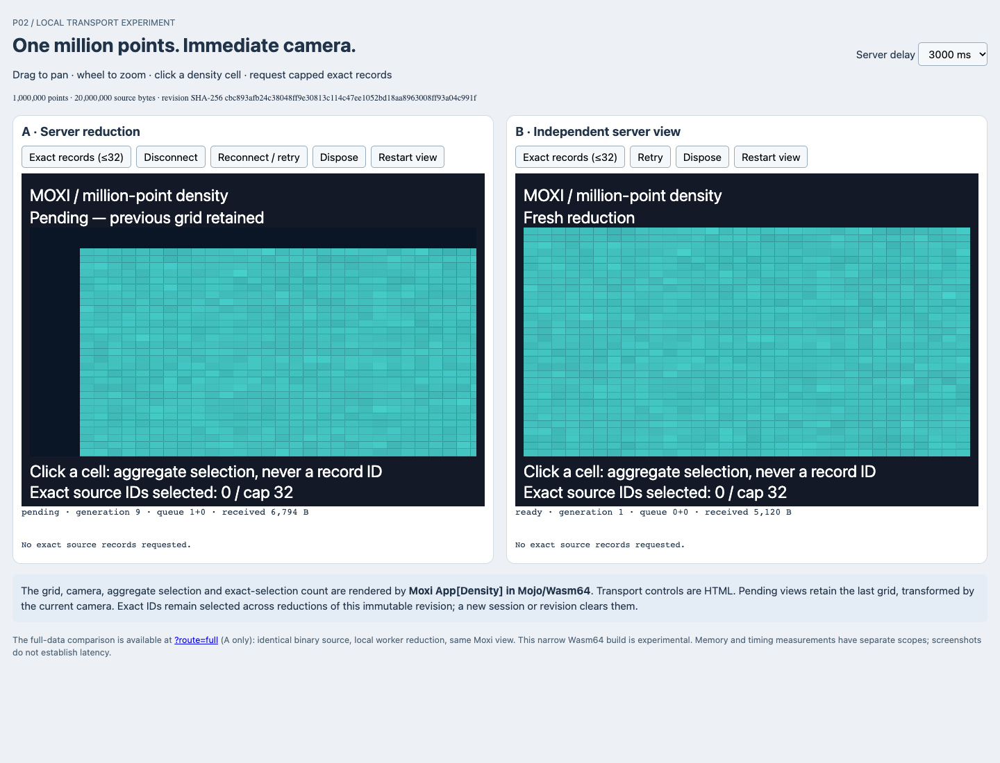
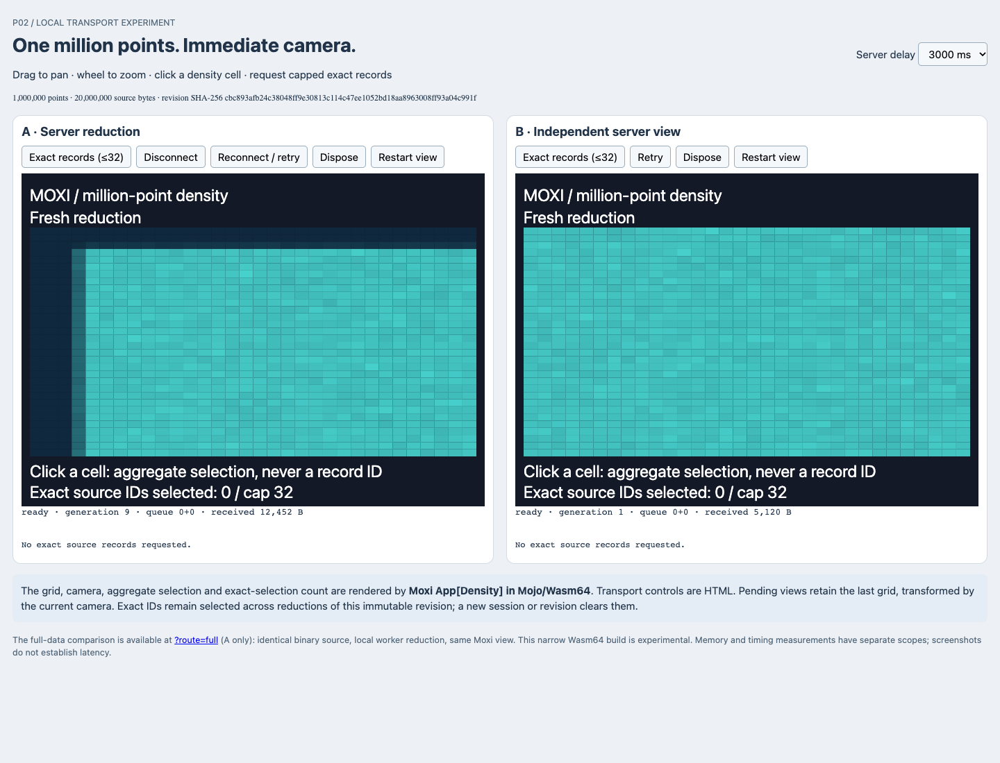
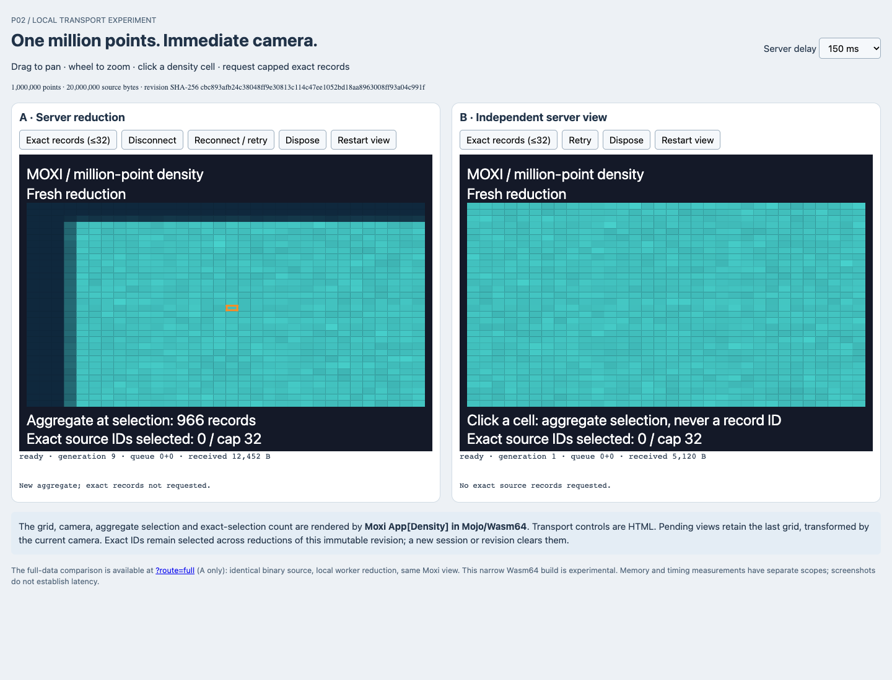
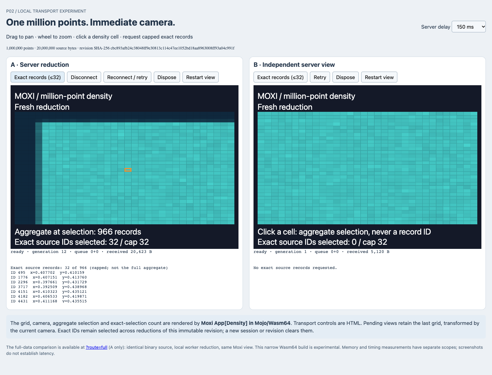
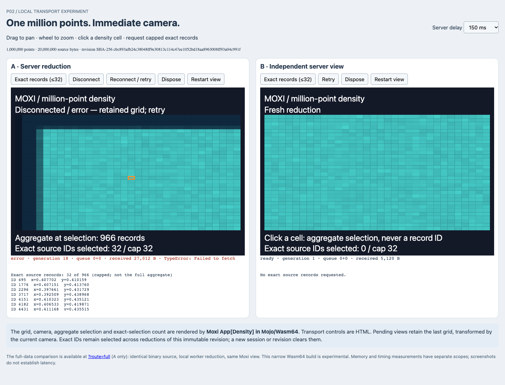
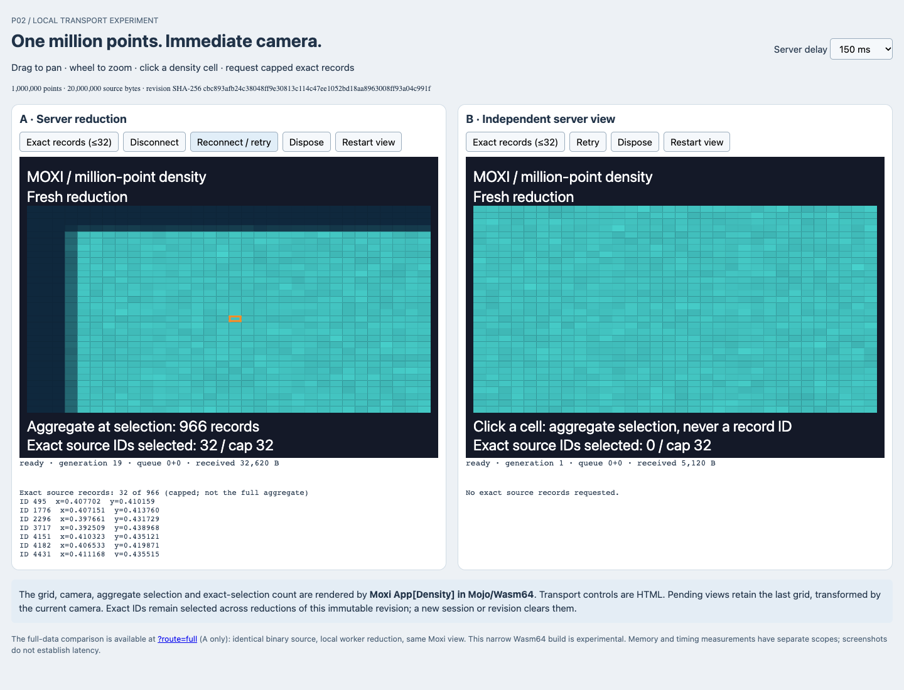
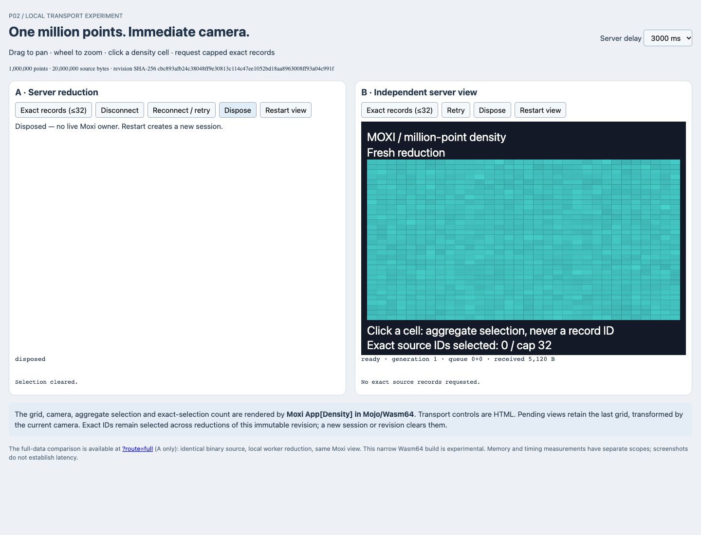
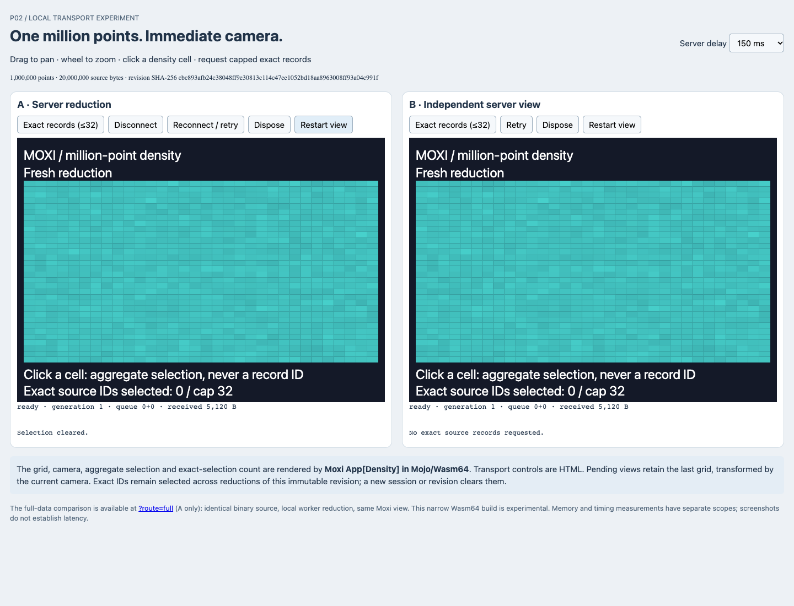

initial grid Action: Open the built P02 application; wait for both million-point reductions. Expected: Two actual Moxi views each show a 32×32 grid totaling one million points.
initial · browser · 1440 × 1100 pixels

pan pending retained Action: Set 3000ms delay; drag A by 72×30 pixels in eight moves. Capture before the final reply. Expected: The old grid moves synchronously with the Moxi camera; pending status is visible and B stays fixed.
interaction · browser · 1440 × 1100 pixels

fresh reduction Action: Release the pointer and wait for the current-generation response. Expected: Fresh viewport reduction replaces the transformed retained grid; one active and one replaceable pending were the maximum.
result · browser · 1440 × 1100 pixels

aggregate selection Action: Click a visible density cell in A. Expected: Orange aggregate bounds are selected; aggregate counts are not record IDs; exact selection is empty.
interaction · browser · 1440 × 1100 pixels

capped exact records Action: Click Exact records (≤32) and wait for the separate capped request. Expected: 32 stable source IDs and coordinates are shown, with the larger aggregate total and truncation disclosed.
result · browser · 1440 × 1100 pixels

network disconnected Action: Use Chromium network-offline emulation and drag A. Expected: The fetch fails visibly; the prior reduction and exact selection remain; B is isolated.
recovery · browser · 1440 × 1100 pixels

retry recovered Action: Restore the loopback network and click Reconnect / retry. Expected: The current viewport receives fresh data; exact IDs for the unchanged revision remain selected.
recovery · browser · 1440 × 1100 pixels

disposed while pending Action: Pan A with 3000ms delay, then Dispose before the reply. Expected: A has no live Moxi owner; B continues displaying its independent view.
recovery · browser · 1440 × 1100 pixels

restarted two views Action: Restart A; wait for its new session and reduction. Expected: A starts at the full viewport with empty selection and a new handle; B remains unchanged.